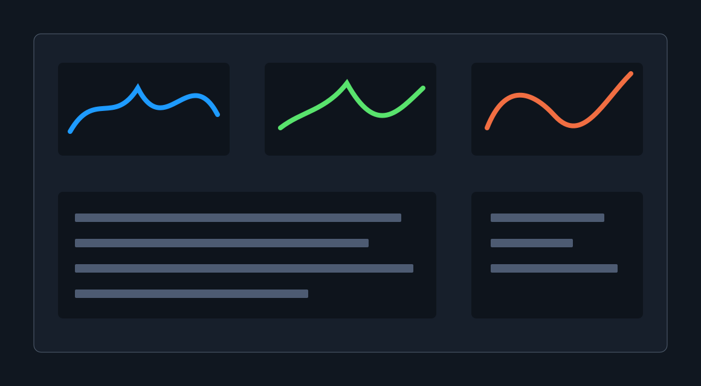

ROLE
Research synthesis, workflow mapping, UI design.
%product design work%
A placeholder case study for performance monitoring and workflow visibility. Swap in final writing and visuals when the project story is ready.

Research synthesis, workflow mapping, UI design.
Turning dense performance signals into a scannable product surface.
Placeholder content with page structure complete.